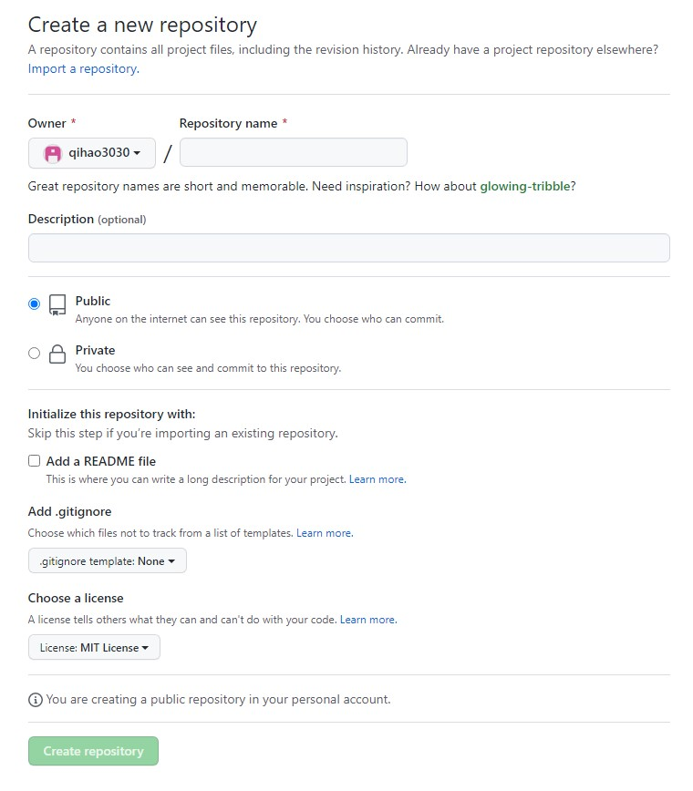
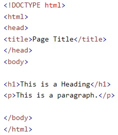
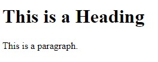
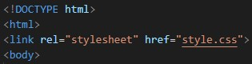

Projects
This page is the documentation of the things I learn throughout the course!
Creating a Webpage
I will be using Github to create my own website. These are the steps to create a website using github
Step1: Create a github account
Step 2: Crete a project in Github
before i can uploade my code i will first need to create a repository. There are several options when creating a new repository. after choosing a name, I need to set it to public and choose a liscence( Optional ). Now we are done and can upload out own code for the website.

Step 3: GitHub desktop(optional)
Instead of using the online version of Github, we can choose to use the desktop version which has the same funtions of the website version but allows me to see the changes I made before uploading the code.
Step 4: Writing the code
the start writing the HTML code, we need to create a file. This file needs to be named "index.html". The index file will be the first file github go to when accesing the website. I will be using Visual studio to do the coding for my website but any text editor should work the same.
Coding in html is relatively simple as there are many online website that has great tutorials for my reference. The website that i will be using alot is W3school.
This is a simple HTML code example. different attributes in the brackets and change the appreance of the text
 
Step 5: Using CSS
To have more control over the design of the webpage, we can use a CSS file. first we need to create a link to the css file in the html file. i can just link the file at the start of the code.

copyright © kong qi hao